Introduction to Digital Modulation
Doug Hoyte
VE3HOY
Digital Modulation
At some level, all digital communication is done over analog media
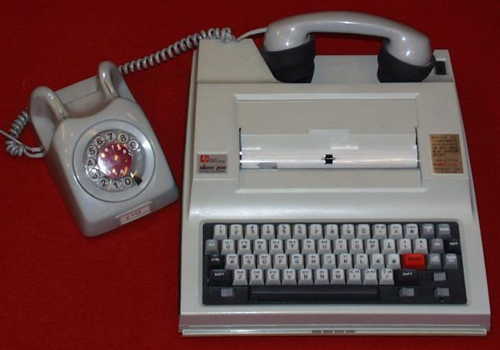
Techniques of digital modulation
- Digital modulation is very similar to analog modulation
-
There are broadly 3 aspects to a signal that can be modulated:
- Amplitude (A)
- Frequency (f)
- Phase (Φ)
- Many transmissions will modulate multiple aspects
A⋅sin(2⋅π⋅f⋅x + Φ)
Amplitude Modulation
For analog data like voice, amplitude modulation works by combining a signal with a carrier in a non-linear way:
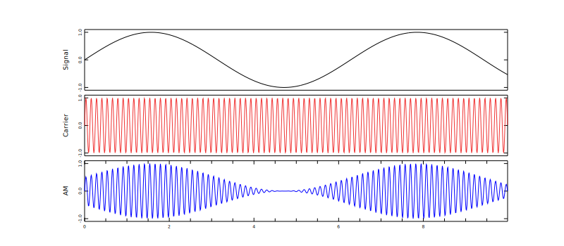
Diode Mixers
- Diodes are non-ohmic conductors (I ≠ V/R)
- By biasing signals into the indicated region, diodes mix (multiply) signals together
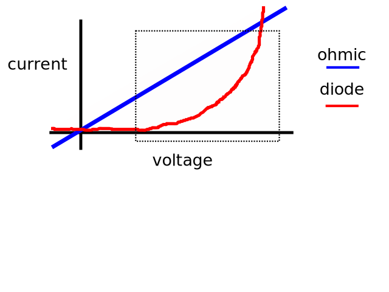
Sidebands
Amplitude Modulation results in two signals of slightly different frequencies known as sidebands:
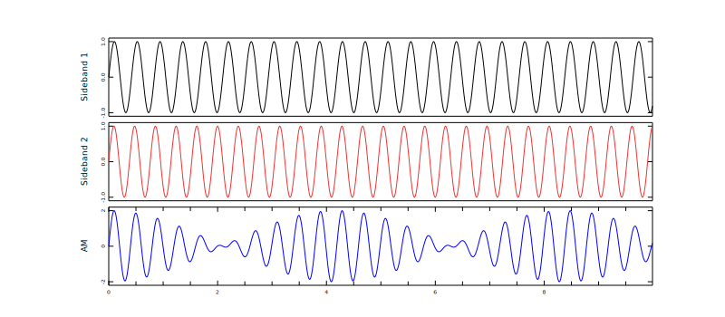
Sidebands: phase relationship
Notice how the output is at its maximum when the sidebands are in phase and minimum when out of phase (consider also guitar tuning):
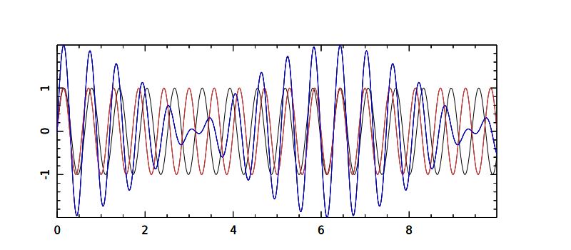
Envelope
The original signal is present in the modulated signal as the envelope. Note that it is shifted up above the X axis ("raised"):
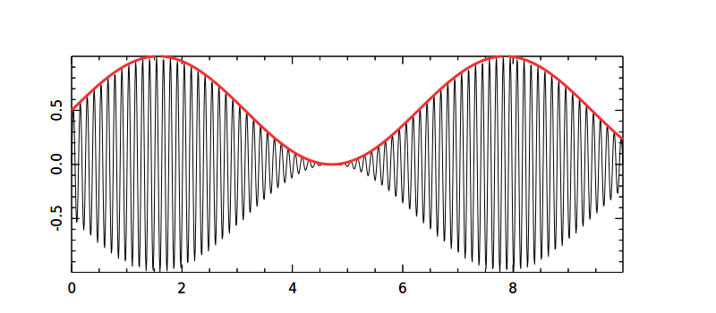
Morse Code (CW)
- Morse code is one of the earliest digital modes
- Known to hams as CW ("Continuous Wave") as opposed to ancient spark-gap transmissions which were not continuous waves
- Conceptually an oscillator that is turned on and off by a manually-operated switch (a "key")
Amplitude Modulation of a digital signal
A simplistic implementation of amplitude-shift keying is on-off keying:
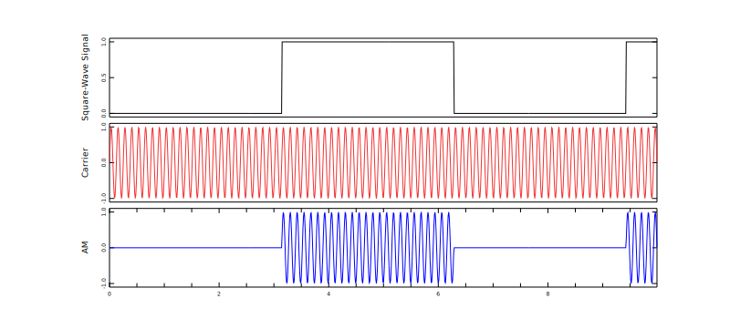
Square waves
The problem with square wave envelopes is they contain an infinite number of harmonics (every 3rd). If used as a keying waveform you get infinite sidebands:
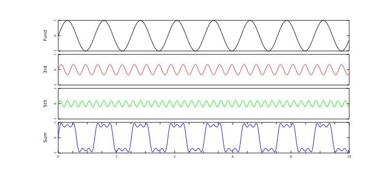
Demo: Harmonics
- Show waterfall output of a pure sine wave, a square wave, and a sawtooth wave
- Even harmonics indicate asymmetry across the X-axis
Frequency response of a pulse
- The fourier transform of a square wave pulse is sinc(x) = sin(π⋅x)/π⋅x
- The wider the pulse, the narrower the frequency response
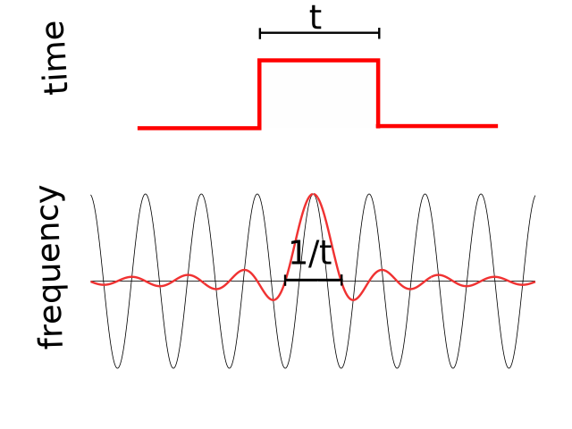
CW Envelope Shaping and Bandwidth
- Because on-off keying is spectrally inefficient/impolite, "smoother" keying envelopes should be used
- An unmodulated carrier wave contains no information and consumes no bandwidth: The bandwidth consumed by a CW transmission depends solely on the keying envelope used
- Recall that sinusoidal envelopes create two "sideband" signals of slightly different frequencies
- The bandwidth consumed is the frequency difference between the sidebands created by the keying envelope
- CW keying hardware has traditionally used RC filters (exponential) because they are simple to implement and harmonics are actually required to copy reliably
Keying Envelope Shaping
- In order to reduce harmonics caused by keying, a softer envelope is used. The flatter we make it, the less like a square wave pulse it becomes
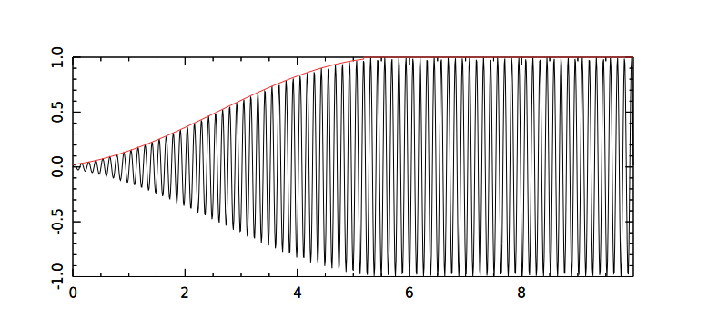
Keying Envelope Steepness
- The steeper the envelope, the higher the frequency of the shaping waveform, the further the sidebands are from the (suppressed) carrier, and the more bandwidth consumed
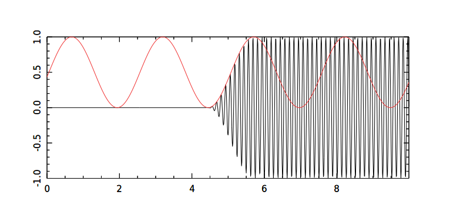
Demo: Morse code key shaping
- "Hard" on-off keying
- "Soft" gaussian minimum-shift keying
- "Nice" hanning keying (aka raised-cosine filtering)
Gaussian Minimum-Shift Keying
- If the keying envelope is sinusoidal and the slope as low as possible then the sidebands are as close together as possible for the chosen baud rate. This is called gaussian minimum-shift keying
- This is a type of amplitude shift keying however it can also be considered a type of frequency shift keying as we will see
Frequency-shift keying
- Frequency-shift keying (FSK) is to FM as ASK is to AM
- DTMF (touch-tone dialing) is a familiar example as in the beginning of this cool image of a modem handshake by Oona Räisänen:
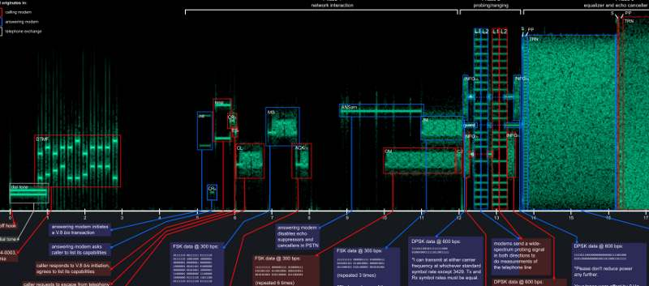
FSK
- Conceptually, the simplest possible type of FSK is binary FSK (BFSK)
- It alternates between two oscillators of different frequencies:
RTTY
- RTTY (Radio-Teletype) is a very old FSK mode that printed digital messages out onto paper
- Uses the 5-bit Baudot encoding invented in 1870 (this is the origin of the word "baud")
- The higher frequency signal indicates a mark and the lower indicates a space
- Has a "shift to figures" character that changes what the codes mean so numbers and punctuation can be sent, and of course a "shift back to letters" character
RTTY: Still in use
- RTTY is still popular on amateur bands even though it is quite bandwidth inefficient
- Must be careful about USB vs LSB: If transmitted on lower sideband the output at the antenna will be inverse of audio
- Fairly resilient to frequency drift and multi-path distortion
- RTTY uses constant power so doesn't require a linear amplifier
Demo: RTTY implementation
- Show RTTY waterfall and fldigi decoding
Phase-shift keying
- Phase-shift keying is a type of angle modulation (as is FSK)
- Pure PSK modifies the phase of a carrier but preserves amplitude and frequency
- Conceptually, phase-shift keying instantly switches between two or more out-of-phase but otherwise equivalent oscillators
Abrupt phase shifts
- Abrupt 180 degree phase-shifts are twice as bad as on-off keying because they are like simultaneously keying off one signal and keying on another
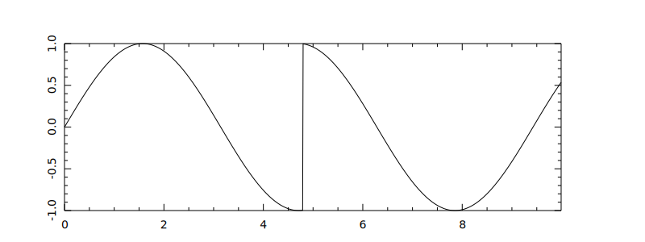
Demo: unsmoothed phase-shift
- Show the waterfall output of an abrupt phase-shift
- Notice how audibly apparent it is
Constellation diagrams
- The phase properties of a signal are commonly shown on a complex plane called the I-Q plane
- All points on the circle represent signals of the same power output so any purely phase-modulated signal must only use symbols on this circle
Binary PSK
- Binary phase-shift keying uses only two signals that are 180 degrees out-of-phase with each-other
- The phases are on the real number-line. 1 is sin(x) and 0 is -sin(x)
Differential Binary PSK
- Differential binary phase-shift keying is where the absolute phase of the original signal is irrelevant
- The fact that a phase changes or does not change is how symbols are signalled
PSK-31
- Popular ham mode: A world-wide chatroom — no internet required
- A typical evening on 20 meters (14.070150 MHz):
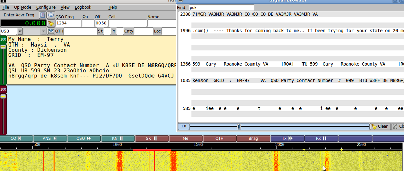
PSK-31
- Several variations available but by far most commonly used is known as PSK-31 (technically DBPSK-31.25)
- Differential Binary Phase-Shift Keying at 31.25 baud (roughly as fast as most people type)
- In a sense, also a form of amplitude modulation
- Peak power of PSK-31 is about 2 times more than average power so a linear amplifier is required
- 31.25 is convenient when using a sample rate of 8000 because the key shaping waveform has a nice even period of 256 samples (32 milliseconds)
Varicode
- PSK-31 uses a custom encoding called varicode
- Like morse code, frequently used symbols have shorter encodings than rare symbols
- Encoded symbols never contain adjacent 0s (the character separator)
- Self-synchronizing: if you lose your place in a stream you can re-synchronize at the next character (like UTF-8)
" " : 1
"e" : 11
"t" : 101
"b" : 1011111
"Q" : 111011101
"\xEE" : 101010111101
Raised cosine shaping
- In order to soften the phase shifts, the signal is passed through a raised cosine filter
PSK-31
- Here is a PSK-31 signal relative to a phase-invariant carrier
- The message is 3 bits: 100
- Another way to think of PSK-31 is a 200% over-modulated AM signal
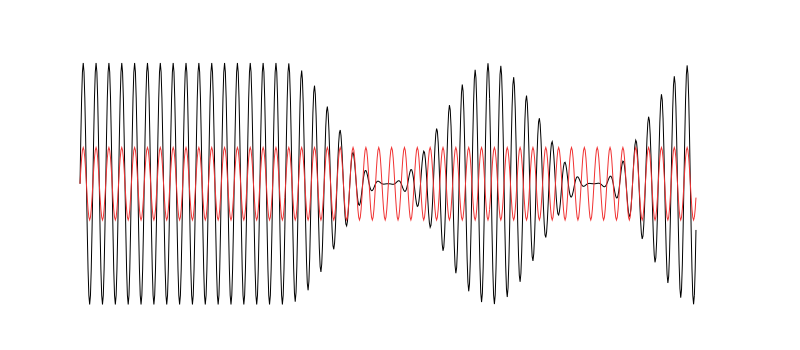
Demo: PSK-31
- Show PSK-31 waterfall and fldigi decoding
- String of 0s (phase shifts)
- String of 1s (no phase shifts)
Quadrature PSK
- Quadrature phase-shift keying uses more symbols than binary PSK
- Unlike binary PSK it uses the Q axis (Quadrature axis) as well as the I axis (In-Phase axis)
Quadrature Amplitude Modulation
- Quadrature Amplitude Modulation (QAM) is a combination of phase-shift keying and amplitude-shift keying
- This constellation diagram depicts a rectangular QAM:
Non-amateur applications
- Digital modulation techniques are used by all modern communication technologies, not just amateur radio
- ASK is used in fiber optics since spectrum efficiency is less important
- Touch-tone dialing and caller-id use FSK
- Most RFID standards use DBPSK (like PSK-31)
- Bluetooth 1 and GSM use GMSK
- WiFi negotiates between DBPSK, DQPSK, QAM, etc
Get involved in amateur radio!
Doug Hoyte
VE3HOY
- Looking for a challenging and exciting new hobby? Interested in radio technology? Want to help your community in case of emergencies?
- Get involved in amateur radio!
- Toronto Amateur Radio Club: www.torarc.ca (meetings are 3rd monday of the month)
- Radio Amateurs of Canada: www.rac.ca